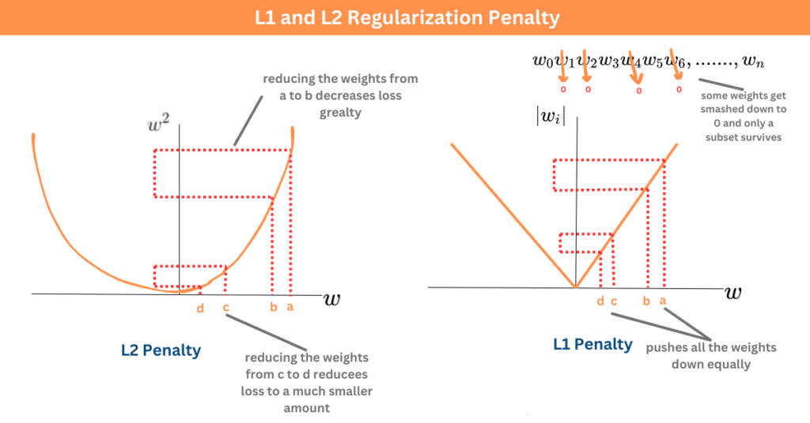
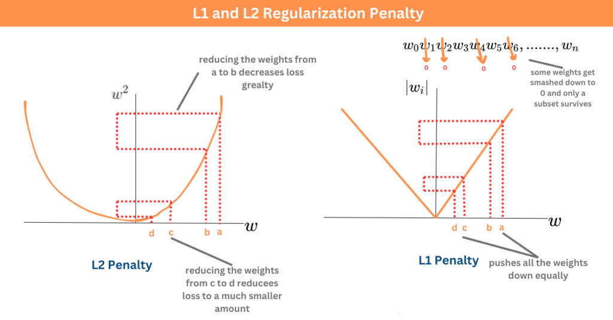

iPAS AI應用規劃師 經典回顧卷002
出題方向
1
神經網路基礎 & 評估
2
資料庫 (SQL/NoSQL)
3
特徵工程 & 資料型態
4
大數據概念
5
資料保護 & AI 法規
6
AI/ML/DL 核心概念
7
AI 倫理 & 責任
8
模型應用 & 歷史
#1
★★★★
卷積神經網路 (CNN) 的核心技術中，哪個是用於降低特徵圖的維度？
答案解析
池化層 (Pooling Layer)，例如最大池化 (Max Pooling) 或平均池化 (Average Pooling)，主要功能是進行下採樣 (Downsampling)，縮減特徵圖的空間尺寸（寬度和高度）。這有助於減少計算量、降低模型對位置微小變化的敏感度（增加強健性），並提取更顯著的特徵。卷積層主要用於特徵提取；權重共享是卷積層的關鍵特性，大幅減少參數數量；循環連接是遞迴神經網路 (Recurrent Neural Network, RNN) 的核心。

#2
★★★★
下列哪一項是遞迴神經網路 (RNN) 的核心技術？

#3
★★★★
長短期記憶網路 (LSTM) 的核心技術是下列哪一個？

#4
★★★★
大型語言模型 (LLM) 的核心架構是什麼？
#5
★★★★
當模型的預測效果與隨機猜測相同時，AUC 值應為？
#6
★★★★
根據文件，模型的預測效果比隨機猜測還差時，AUC 值會小於哪個數值？
#7
★★★★
正規化 (Regularization) 主要是為了防止模型出現下列哪種情況？
 

#8
★★★★
正規化通常透過在損失函數中加入什麼來實現？
#9
★★★★
Transformer 的核心技術是？
#10
★★★★
NoSQL 資料庫的 BASE 原則中，B 代表什麼？
#11
★★★★
什麼時候應該使用 NoSQL 而非 SQL 資料庫？
#12
★★★★
MongoDB 屬於哪種類型的 NoSQL 資料庫？
#13
★★★★
Google Bigtable 屬於哪種類型的 NoSQL 資料庫？
#14
★★★★
NoSQL 資料庫的優勢之一是？
#15
★★★★
ACID 原則中的 I (Isolation) 代表什麼？
#16
★★★★
NoSQL 的 BASE 原則主要用於什麼類型的應用？
#17
★★★★
SQL 中的 JOIN 操作主要用於什麼？
#18
★★★★
哪一個 NoSQL 資料庫適合處理推薦系統？

#19
★★★★
特徵工程中的特徵選擇方法包括以下哪一項？
#20
★★★★
資料降維技術如 PCA 的主要作用是什麼？
#21
★★★★
布林值 (Boolean) 主要用於表示什麼概念？
#22
★★★★
根據文件，下列哪個選項可能使用布林值 (Boolean) 作為資料型態？
#23
★★★★
若使用布林值 (Boolean) 表示性別，下列哪種表示方式是可行的？
#24
★★★★
何者無法判斷資料集中趨勢？

#25
★★★★
SQL 資料庫的 ACID 原則不包括以下哪一項？
#26
★★★★
NoSQL 常見的四種類型不包括哪一種？
#27
★★★★
哪一種 NoSQL 資料庫最適合用於社交網路關係？
#28
★★★★
SQL 和 NoSQL 在擴展性上的主要區別是什麼？
#29
★★★★
SQL 資料庫遵循哪一個標準語法語言？
#30
★★★★
NoSQL 資料庫的 BASE 原則中，B 代表什麼？
#31
★★★★
什麼時候應該使用 NoSQL 而非 SQL 資料庫？
#32
★★★★
「王小明」這個人名屬於哪種資料型態？
#33
★★★★
「1990-01-01」這個生日最適合用哪種資料型態儲存？
#34
★★★★
「O 型」血型通常屬於下列哪種資料型態？
#35
★★★★
「台北市信義區 00 路 XX 號」這個住址應該使用哪種資料型態儲存？
#36
★★★★
表示性別時，下列哪種資料型態最不常用？
#37
★★★★
年齡「25」通常是什麼資料型態？
#38
★★★★
大數據 (Big Data) 的 5V 特性中，代表資料多樣性的是哪一項？
#39
★★★★
在大數據時代的轉變中，下列哪一項是其中之一？
#40
★★★★
以下哪一項不是大數據 (Big Data) 的核心特性？
#41
★★★★
大數據 (Big Data) 中，資料的真實性 (Veracity) 代表什麼？
#42
★★★★
以下哪些屬於非結構化資料的範疇？
#43
★★★★
在評估 AI 模型的泛化能力時，最需要警惕：
#44
★★★★
以下哪一項是 GDPR（歐盟通用資料保護規則）資料保護的基本原則？
#45
★★★★
資料最小化 (Data Minimisation) 的主要原則是什麼？
#46
★★★★
資料加密的傳輸通常使用哪種技術？
#47
★★★★
依據歐盟人工智慧法案 (AI Act)，下列何者屬於「不可接受風險」的 AI？
#48
★★★★
歐盟人工智慧法案 (AI Act) 規定，違規企業最高可被罰款全球年營收的多少比例？
#49
★★★★
歐盟人工智慧法案 (AI Act) 中「高風險 AI 系統」的主要適用領域為？
#50
★★★★
歐盟人工智慧法案 (AI Act) 規範的「透明度義務」適用於哪類 AI？
#51
★★★★
歐盟人工智慧法案 (AI Act) 對「高風險 AI」的主要要求不包括？
#52
★★★★
在歐盟人工智慧法案 (AI Act) 中，何種 AI 系統屬於「有限風險」類別？
#53
★★★★
歐盟人工智慧法案 (AI Act) 針對生成式 AI 的規定不包括？
#54
★★★★
哪類 AI 技術在歐盟人工智慧法案 (AI Act) 內屬於「最低風險」？
#55
★★★★
歐盟人工智慧法案 (AI Act) 規定，高風險 AI 的使用者應具備哪些義務？
#56
★★★★
歐盟人工智慧法案 (AI Act) 針對自動駕駛 AI 的要求為何？
#57
★★★★
長短期記憶網路 (LSTM) 中的門控機制 (Gating Mechanism) 的主要作用是什麼？
#58
★★★★
以下哪一項是迴歸分析 (Regression Analysis) 的主要目標？

#59
★★★★
深度學習神經網路的結構以什麼為基礎？

#60
★★★★
人工智慧 (AI) 的特性包括以下哪一項？
#61
★★★★
以下哪一項描述了弱人工智慧 (Weak AI / Narrow AI) 的特性？
#62
★★★★
機器學習 (Machine Learning) 的主要用途不包括以下哪一項？
#63
★★★★
監督式學習 (Supervised Learning) 的主要特性是什麼？
#64
★★★★
特徵工程 (Feature Engineering) 的目的是什麼？
#65
★★★★
以下哪一項是特徵選取 (Feature Selection) 的主要原則之一？

#66
★★★★
根據歐盟人工智慧法案 (AI Act)，誰應該對 AI 系統行為負責？
#67
★★★★
什麼是負責任 AI (Responsible AI) 的核心原則？
#68
★★★★
負責任 AI (Responsible AI) 的關鍵原則之一是？
#69
★★★★
歐盟《人工智慧法案》(AI Act) 採用的核心管理模式是？
#70
★★★★
根據歐盟《人工智慧法案》(AI Act)，下列哪一類 AI 系統原則上禁止使用？
#71
★★★★
歐盟《人工智慧法案》(AI Act) 對高風險 AI 系統的主要要求是？
#72
★★★★
下列哪個應用領域的 AI 系統可能被歐盟《人工智慧法案》(AI Act) 視為高風險？
#73
★★★★
當使用者與聊天機器人互動時，歐盟《人工智慧法案》(AI Act) 要求告知使用者？
#74
★★★★
根據歐盟《人工智慧法案》(AI Act)，「深度偽造」(Deepfake) 的影像內容在公開發布時應？
#75
★★★★
歐盟人工智慧法案 (AI Act) 主要將 AI 系統依風險劃分為幾個等級？
#76
★★★★
當模型的預測效果與隨機猜測相同時，AUC 的數值應接近多少？
#77
★★★★
根據文件，當模型的預測效果比隨機猜測還差時，AUC 應為下列哪個範圍？
#78
★★★★
理論上，AUC 值為 0 代表模型做出了什麼樣的預測？
#79
★★★★
在監督式學習 (Supervised Learning) 中，標籤的作用是什麼？
#80
★★★★
資料集劃分時，驗證集 (Validation Set) 的主要用途是什麼？
#81
★★★★
資料收集時應注意哪一項以確保 AI 系統的公平性？
#82
★★★★
非監督式學習 (Unsupervised Learning) 的主要特性是什麼？
#83
★★★★
強化學習 (Reinforcement Learning) 的主要應用場景是什麼？
#84
★★★★
「人工智慧」(Artificial Intelligence) 這個術語首次在哪個歷史性會議上被提出？
#85
★★★★
哪種類型的 AI 專注於執行特定任務，例如語音辨識或下棋？
#86
★★★★
艾倫·圖靈 (Alan Turing) 提出的著名測試，用來判斷機器是否能展現出與人類無法區分的智慧行為，稱為？
#87
★★★★
深度學習 (Deep Learning) 是哪個 AI 技術領域的一個分支？
#88
★★★★
讓電腦能夠理解、解釋和生成人類語言的 AI 分支被稱為什麼？
#89
★★★★
目前被認為仍處於理論階段，指望機器擁有與人類同等、可在多領域應用的智慧是指？
#90
★★★★
使電腦能夠從圖像或影片中提取資訊並進行理解的 AI 技術領域是？
#91
★★★★
AI 的哪個子領域，使系統能夠在沒有明確指令的情況下，從經驗（資料）中學習？
#92
★★★★
下列哪項不是目前狹義 AI (Narrow AI) 的典型應用？
#93
★★★★
下列關於 AUC (Area Under the ROC Curve) 的敘述何者正確？
#94
★★★★
在二元分類問題中，ROC (Receiver Operating Characteristic) 曲線的橫軸通常代表什麼？
#95
★★★★
在二元分類問題中，ROC (Receiver Operating Characteristic) 曲線的縱軸通常代表什麼？
#96
★★★★
根據文件，卷積神經網路 (CNN) 中的哪個層級的主要功能是「降維」？
#97
★★★★
池化層 (Pooling Layer) 在 CNN 中進行降維的主要目的是什麼？
#98
★★★★
下列哪個池化操作常用於 CNN 的降維？
#99
★★★★
降維技術 (Dimensionality Reduction) 的主要目的是什麼？
#100
★★★★
除了池化層，下列哪種方法也常用於降維？
#101
★★★★
權重共享 (Weight Sharing) 是 CNN 的核心技術之一，它主要減少了模型的哪個部分？

#102
★★★★
長短期記憶網路 (LSTM) 中的門控機制 (Gating Mechanism) 的主要作用是什麼？